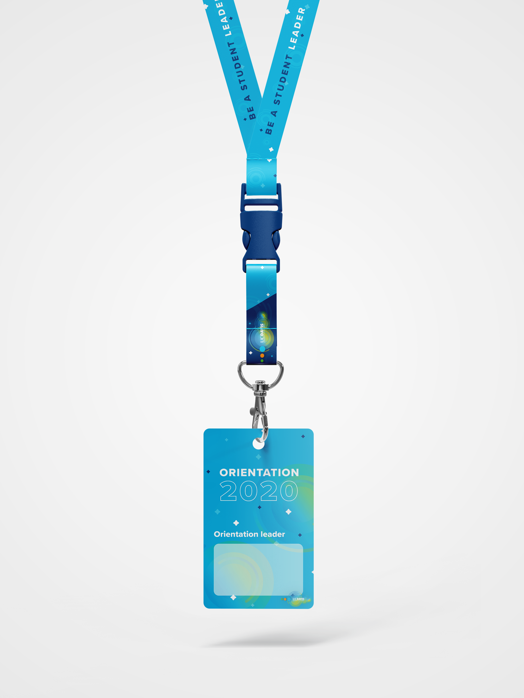
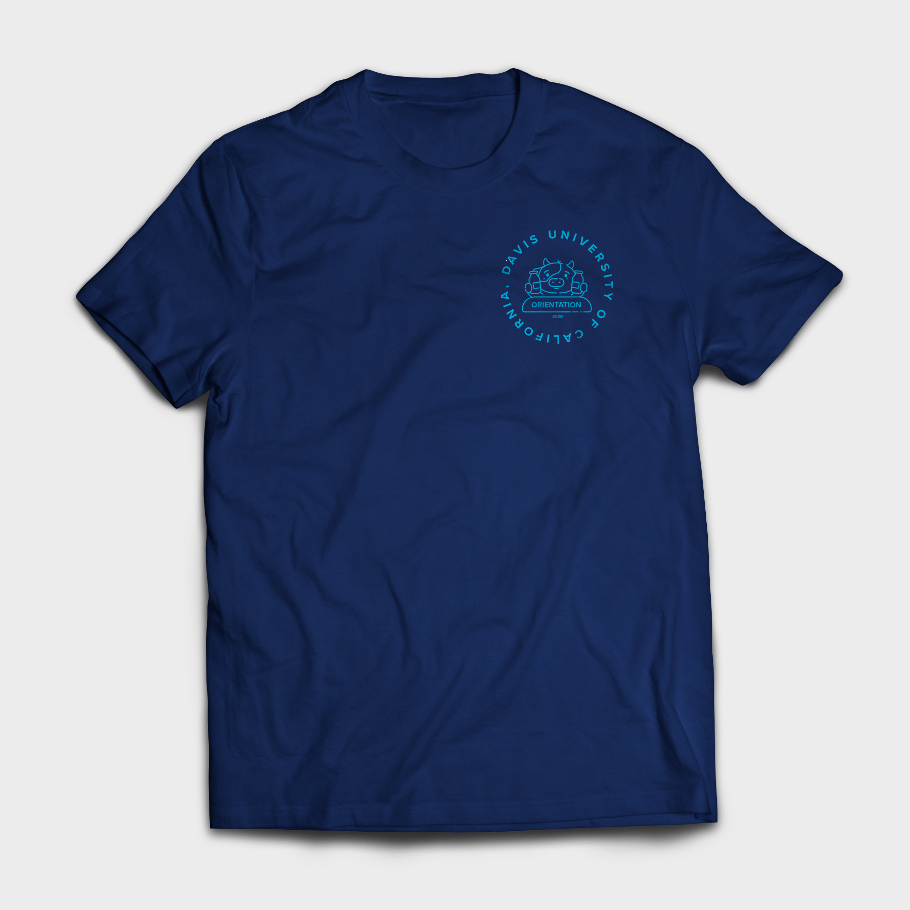
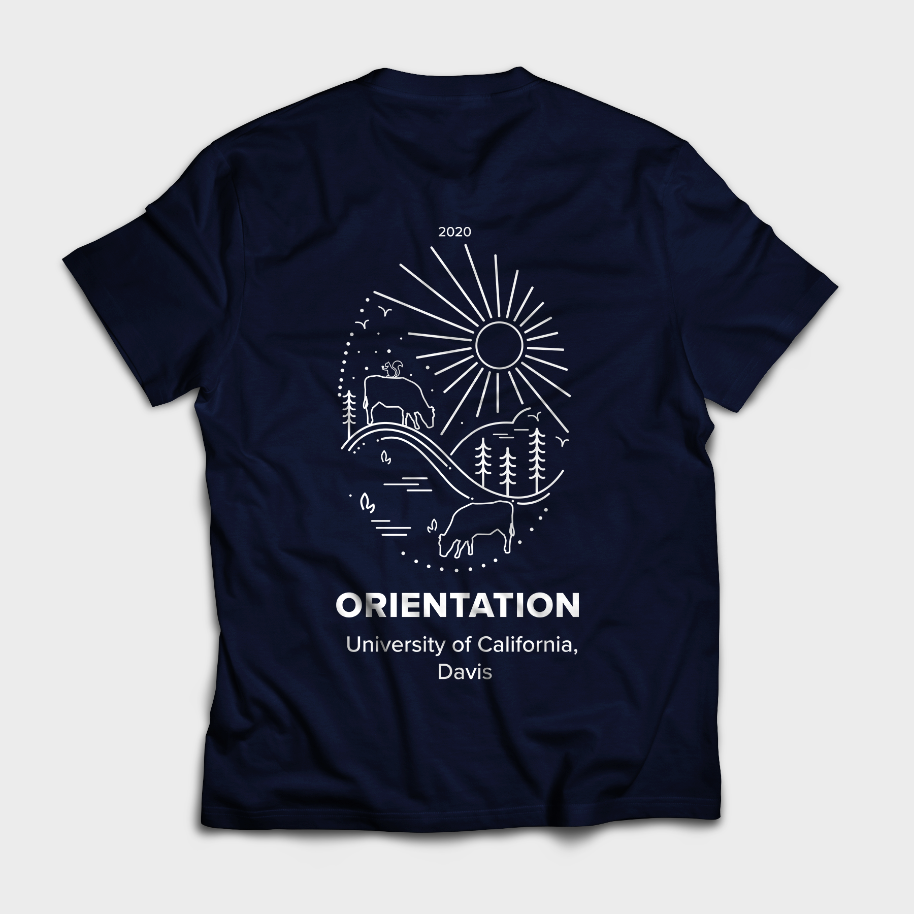
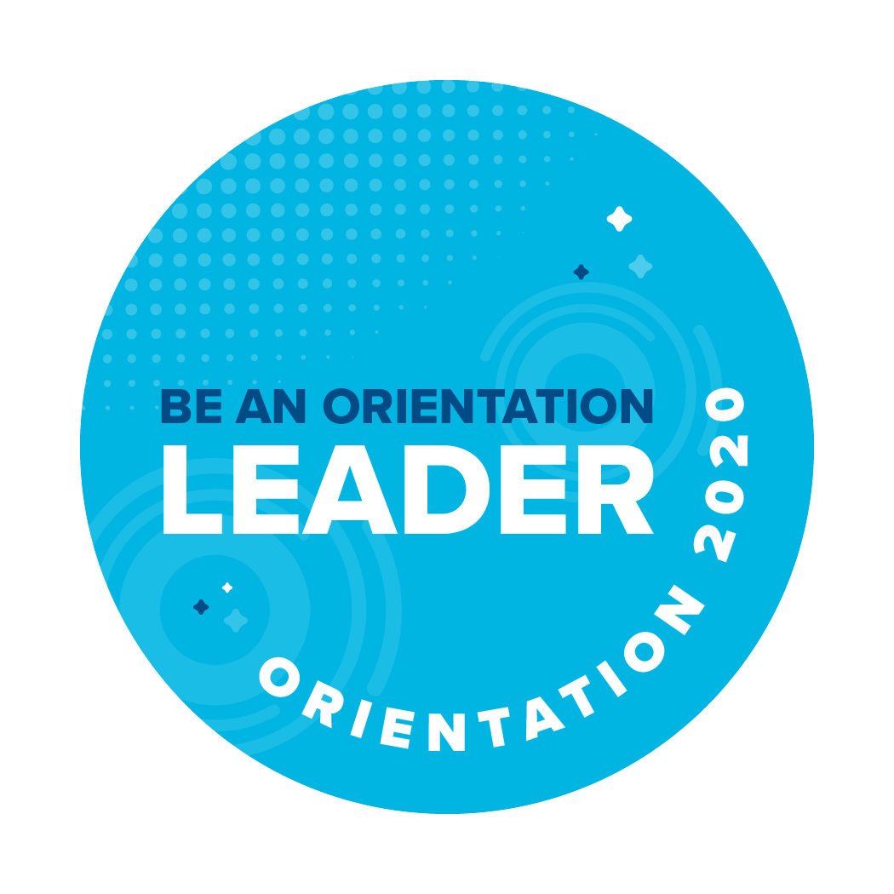
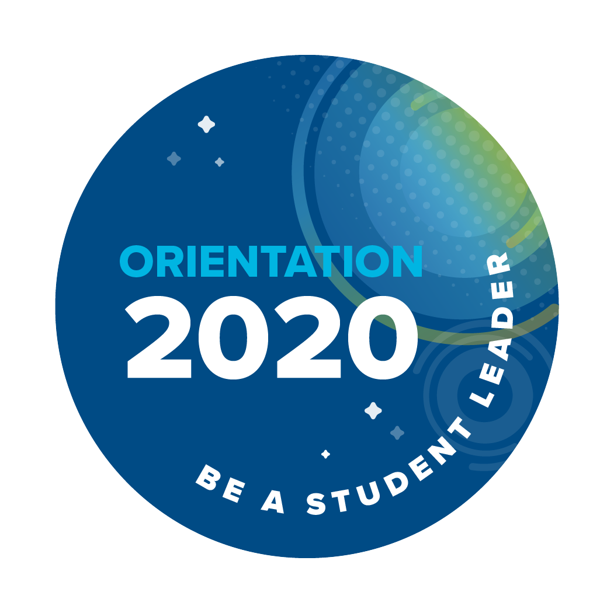

Project Elements
Duration üïê
October 2019 – November 2019 (3 weeks)
Tools ✒️
Adobe Illustrator, Adobe Photoshop
Role üôã‚Äç
Brand Identity, Visuals
01. Project Overview
Background
UC Davis Student Housing provides a home to over 10,000 UC Davis undergraduate and graduate students. About 6,000 students reside in the
residence halls, most of them in their first year at the university. Student Housing's mission is to provide living, dining and academic support
services that facilitate a successful transition to the UC Davis community and foster ongoing learning and life-skill development.
UC Davis Orientation is held to help first-year and transfer students prepare for a great first year. The experience is split into three parts: Aggie 101, Aggie Advising, and Aggie Orientation.
UC Davis Orientation is held to help first-year and transfer students prepare for a great first year. The experience is split into three parts: Aggie 101, Aggie Advising, and Aggie Orientation.
Objective
UC Davis Orientation hires over 600 student leaders in four different positions who make Aggie Orientation possible. This year's orientation experience implemented a new three-part system
where each part had a corresponding color to differentiate itself from the others. My role was to
design the new hire marketing materials and branding for the upcoming 2020 orientation that incorporated this new standard.


Aggie 101
Learn about UC Davis resources, explore your Aggie community, and prepare to arrive on campus - all online.
Aggie Advising
Receive academic advising remotely in preparation for course schedule planning and registration.
Aggie Orientation
Get excited about being an Aggie! Build community networks of support, find resources, and begin your life on campus during our five day program.
02. Design
Email Header
These are two email headers that I designed and sent for review. I was given a lot of freedom with these designs, however, the only constraint was to utilize
the three colors for each part of orientation. We ultimately decided to move forward with the second design.
LCD Screen
LCD screens are found all over the UC Davis campus, specifically in very popular, common areas with a lot of student traffic.
Social Media
UC Davis Student Housing utilizes their social media handles (i.e. Facebook, Instagram, etc.) to advertise for events and promotions. I designed these
Facebook frames for orientation leaders to post to reach a broader student audience.
Lanyards
I designed these lanyards to be handed out to all orientation leaders during the event. It was also a possibility for these lanyards (without the tag)
to be given out to new students if the budget allowed.

T-Shirts
I designed two shirts to be given out at orientation.


Stickers & Buttons


05. Reflection
Lessons & Takeaways
Disclaimer: Some of these designs were used in marketing for new hire materials, however, some were what I would have hoped to see if I had more leverage in
making executive decisions for the event. Despite not being able to see all of these designs come to surface, I really enjoyed creating this vision for the brand identity.
Because I work at UC Davis Student Housing as a student assistant, my work must be approved by many important campus professionals and trying to maintain the UC Davis
branding without sacrificing my creativity and design style has posed a challenge for me. However, I've been able to design for much larger audiences and explore
ways of creating a happy medium between maintaining the university's image as well as my own style. It's still in progress, but doing this kind of work, I've learned to design more unselfishly
and think about how others will perceive and experience my work rather than just myself.